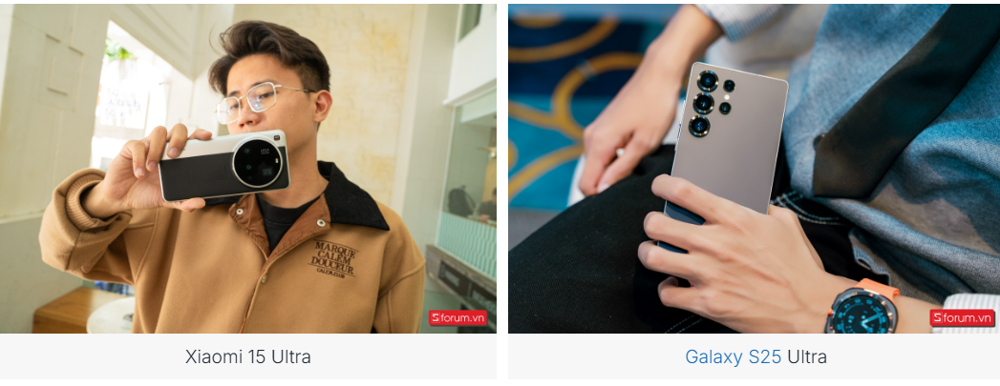
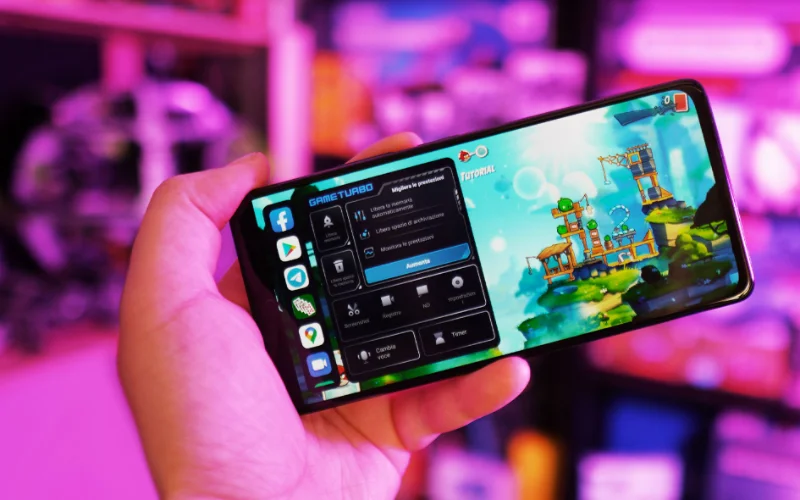

So sánh Xiaomi 15 Ultra và S25 Ultra: Ngôi vương smartphone Android thuộc về ai?
Trong bài viết này chúng ta cùng so sánh Xiaomi 15 Ultra và S25 Ultra để xem đâu là chiếc điện thoại “Ultra” tốt hơn và xứng đáng là ông hoàng smartphone Android?
Xiaomi 15 Ultra và S25 Ultra đều được bán chính hãng tại Việt Nam và đều sở hữu những tính năng, công nghệ xịn sò nhất từ hai nhà sản xuất smartphone Android hàng đầu thế giới. Nếu bạn đang phân vân không biết nên chọn mẫu flagship đến từ thương hiệu nào thì bài so sánh này sẽ giúp bạn tìm ra được những điểm giống và khác để bạn lựa chọn được sản phẩm phù hợp với nhu cầu.
Tổng quan về Xiaomi 15 Ultra và S25 Ultra
Xiaomi 15 Ultra mới được ra mắt toàn cầu cách đây không lâu và cũng đã chính thức được giới thiệu tại thị trường Việt Nam. Tiếp nối truyền thống của dòng Ultra, Xiaomi 15 Ultra sở hữu cụm camera có thể coi là “trùm cuối” về mặt phần cứng. Nếu chỉ tính các mẫu điện thoại có bán chính hãng tại Việt Nam thì cụm camera này thực sự không có đối thủ.
Đại diện nhà Samsung, chiếc Galaxy S25 Ultra đã được ra mắt vào hồi tháng 1 năm nay và hiện tại đã được bán ra được một thời gian. Mặc dù không sở hữu hệ thống camera siêu khủng nhưng đổi lại Galaxy S25 Ultra lại sở hữu những “vũ khí” độc quyền như bút S Pen, Galaxy AI hữu ích.
Cả Xiaomi 15 Ultra và S25 Ultra đều được trang bị cấu hình hàng đầu hiện nay với con chip Snapdragon X Elite, màn hình chất lượng cùng hàng loạt trang bị ấn tượng khác.
So sánh Xiaomi 15 Ultra và Galaxy S25 Ultra chi tiết
Để có cái nhìn khách quan và toàn diện nhất, chúng ta sẽ tiến hành so sánh Xiaomi 15 Ultra vs Galaxy S25 Ultra qua từng khía cạnh để tìm ra chiếc điện thoại Android tốt nhất nhé.
Về thiết kế: cả hai đều sang trọng, đẳng cấp và có những nét riêng
Xiaomi 15 Ultra khoác lên mình vẻ ngoài khá độc đáo với cụm camera “siêu to khổng lồ” chiếm gần như toàn bộ khu vực nửa trên của máy. Mặt lưng của máy có hai phiên bản, một phiên bản chỉ có một màu (đen hoặc trắng) và phiên bản đặc biệt Panda Edition với sự kết hợp của màu đen-bạc hoặc xanh lá-bạc dễ dàng liên tưởng đến những chiếc máy ảnh Leica cổ điển nhưng cực kỳ cao cấp và ấn tượng.
TMặt lưng của Xiaomi 15 Ultra được làm từ sợi thuỷ tinh hoặc da nhân tạo tuỳ phiên bản. Khung máy làm bằng nhôm, kích thước tổng thể 161.3 x 75.3 x 9.4 mm, trọng lượng có thể dao động từ 226g đến 229g, tùy thuộc vào chất liệu mặt lưng.
Trong khi đó Galaxy S25 Ultra vẫn kế thừa thiết kế đặc trưng với thân máy vuông vức, hai mặt kính và khung viền titan siêu bền. Tuy nhiên S25 Ultra năm nay cũng được làm các góc bo cong hơn nhưng khung viền phẳng hơn so với S24 Ultra cho cảm giác cầm thoải mái hơn.

Galaxy S25 Ultra có kích thước 162.8 x 77.6 x 8.2 mm, lớn hơn đáng kể so với Xiaomi 15 Ultra do sở hữu màn hình lớn hơn nhiều. Tuy nhiên chiếc flagship của Samsung lại nhẹ nhàng hơn khi có trọng lượng chỉ 218g.
Cả hai mẫu smartphone này đều hỗ trợ khả năng kháng nước và bụi theo tiêu chuẩn IP68, giúp người dùng yên tâm sử dụng trong nhiều điều kiện môi trường khác nhau. Về màu sắc, S25 Ultra có khá nhiều tùy chọn màu khác nhau gồm trắng, đen, xanh dương, xám.
Về màn hình: Galaxy S25 Ultra lớn hơn
Cả Xiaomi 15 Ultra và Galaxy S25 Ultra đều sở hữu những màn hình thuộc hàng "top" trên thị trường smartphone hiện nay, mang đến trải nghiệm thị giác vô cùng ấn tượng.
Xiaomi 15 Ultra được trang bị màn hình LTPO AMOLED kích thước 6.73 inch, độ phân giải 1440 x 3200 pixels (mật độ điểm ảnh khoảng 522 ppi). Màn hình này hỗ trợ tần số quét thích ứng 120Hz, các công nghệ hiển thị tiên tiến như Dolby Vision, HDR10+ và HDR Vivid, cùng độ sáng tối đa lên đến 3200 nits.
Điều này có nghĩa là màn hình của Xiaomi 15 Ultra sẽ có khả năng hiển thị hình ảnh cực kỳ sắc nét, màu sắc sống động, độ tương phản cao, chuyển động mượt mà và đặc biệt là khả năng hiển thị rõ ràng ngay cả dưới ánh sáng mặt trời gay gắt. Máy được bảo vệ bởi kính cường lực Xiaomi Shield Glass 2.0.
Galaxy S25 Ultra tất nhiên sẽ không hề kém cạnh. Là nhà sản xuất màn hình OLED lớn nhất và chất lượng nhất thế giới, Samsung trang bị cho chiếc điện thoại đầu bảng của mình màn hình Dynamic LTPO AMOLED 2X kích thước 6.9 inch, độ phân giải 1440 x 3120 pixels (mật độ điểm ảnh khoảng 498 ppi).
Màn hình này cũng hỗ trợ tần số quét thích ứng 120Hz và công nghệ HDR10+, với độ sáng tối đa 2600 nits. Dù độ sáng tối đa có phần kém hơn so với Xiaomi 15 Ultra, màn hình của Galaxy S25 Ultra vẫn đảm bảo khả năng hiển thị xuất sắc trong mọi điều kiện ánh sáng. Máy được bảo vệ bằng kính Corning Gorilla Armor 2.
Nhìn chung, cả hai màn hình đều hứa hẹn mang đến trải nghiệm thị giác tuyệt vời. Xiaomi 15 Ultra có lợi thế hơn một chút về độ sáng tối đa, trong khi Galaxy S25 Ultra có thể nhỉnh hơn về kích thước và thiết kế tràn viền.
Về hiệu năng: Đều là Snapdragon 8 Elite
Cả Xiaomi 15 Ultra và S25 Ultra đều được trang bị chip xử lý Snapdragon 8 Elite – con chip mạnh mẽ nhất của Qualcomm tại thời điểm ra mắt. Chip này được sản xuất trên tiến trình 3nm tiên tiến, hứa hẹn mang đến hiệu năng vượt trội so với các thế hệ trước.
Snapdragon 8 Elite có CPU 8 nhân, với cấu trúc bao gồm:
Đi kèm với CPU mạnh mẽ là GPU Adreno 830, mang đến khả năng xử lý đồ họa ấn tượng, giúp người dùng thoải mái chơi các tựa game đồ họa cao, chỉnh sửa video 4K/8K một cách mượt mà.
Về bộ nhớ, Xiaomi 15 Ultra có các tùy chọn RAM 12GB hoặc 16GB, đi kèm với các tùy chọn bộ nhớ trong 256GB, 512GB hoặc 1TB, sử dụng chuẩn UFS 4.1 cho tốc độ đọc/ghi dữ liệu cực nhanh.
Galaxy S25 Ultra cũng không hề kém cạnh với các tùy chọn RAM 12GB hoặc 16GB và các tùy chọn bộ nhớ trong 256GB, 512GB hoặc 1TB, sử dụng chuẩn UFS 4.0.
Mặc dù Galaxy S25 Ultra được trang bị bộ xử lý for Galaxy nhưng Samsung lại thường giới hạn hiệu năng trên những chiếc điện thoại của mình để đảm bảo quá nhiệt. Vì vậy mà S25 có thể chỉ chiếm ưu thế ở các bài test hiệu năng đơn lõi, còn với các thử nghiệm hiệu năng đa lõi hay AnTuTu gần như chắc chắn Xiaomi 15 Ultra sẽ có kết quả tốt hơn.
Về camera: Đỉnh và đỉnh hơn
Galaxy S25 Ultra có thể nói là một trong những chiếc điện thoại sở hữu chất lượng camera cao cấp hàng đầu thị trường, nhưng vẫn phải lép vế đôi chút khi đứng cạnh Xiaomi 15 Ultra.
Dưới đây là bảng so sánh camera Xiaomi 15 Ultra và Galaxy S25 Ultra:
| Xiaomi 15 Ultra | Samsung Galaxy S25 Ultra | |
|---|---|---|
| Camera chính | 50MP, f/1.6, cảm biến 1", Dual Pixel PDAF, OIS | 200MP, f/1.7, multi-directional PDAF, OIS |
| Camera tele | 50MP, f/1.8, zoom quang 3x, Dual Pixel PDAF, OIS | 10MP, f/2.4, zoom quang 3x, PDAF, OIS |
| Camera periscope | 200MP, f/2.6, cảm biến 1/1.4 inch, zoom quang 4.3x, OIS | 50MP, f/3.4, zoom quang 5x, PDAF, OIS |
| Camera góc siêu rộng | 50MP, f/2.2, 115°, Dual Pixel PDAF | 50MP, f/1.9, 120°, Dual Pixel PDAF, Super Steady video |
| Cảm biến phụ | TOF 3D | - |
| Camera trước | 32MP, f/2.0 | 12MP, f/2.2, Dual Pixel PDAF |
| Quay video |
8K@30fps, 4K@30/60/120fps, 1080p@30/60/120/240/480/960/1920fps, gyro-EIS, Dolby Vision HDR 10-bit rec. (4K@60fps, 1080p) |
8K@24/30fps, 4K@30/60/120fps, 1080p@30/60/120/240fps, 10-bit HDR, HDR10+, stereo sound rec., gyro-EIS |
| Tính năng khác | Laser AF, cảm biến màu sắc, ống kính Leica | Laser AF, Best Face, LED flash, auto-HDR, panorama |
Có thể thấy, cả hai hệ thống camera đều rất ấn tượng, với những cảm biến lớn, độ phân giải cao, hỗ trợ chống rung quang học và nhiều tính năng tiên tiến.
Tuy nhiên Xiaomi áp đảo ở nhiều hạng mục. Đầu tiên, camera chính của S25 Ultra dù có độ phân giải cao hơn nhưng không thể sánh được với cảm biến 1 inch của Xiaomi 15 Ultra. Xiaomi còn trang bị cho 15 Ultra camera tele 3X 50MP (S25 Ultra là 10MP). Camera tele thứ 2 của Xiaomi 15 Ultra dùng cảm biến Samsung HP9 200MP, kích thước siêu lớn 1/1.4 inch và tiêu cự 4.3 inch.
Samsung mặc dù đứng sau cảm biến tele HP9 “đỉnh cao” nhất hiện tại nhưng lại chưa trang bị nó cho bất kỳ điện thoại nào của mình, ngay cả S25 Ultra. Lý do đằng sau có lẽ là kích thước siêu lớn của cảm biến này. Đây cũng là lý do làm cho cụm camera của Xiaomi 15 Ultra siêu lớn và thân máy khá dày.
Về pin và sạc: Xiaomi 15 Ultra pin lớn hơn, sạc nhanh hơn
Xiaomi 15 Ultra sở hữu viên pin dung lượng 5410 mAh, hứa hẹn mang đến thời lượng sử dụng pin ấn tượng. Máy cũng hỗ trợ công nghệ sạc nhanh có dây lên đến 90W, sạc nhanh không dây 80W và sạc ngược không dây 10W.
Samsung Galaxy S25 Ultra vẫn trung thành với pin 5000 mAh, hỗ trợ sạc nhanh có dây 45W, sạc nhanh không dây 15W (chuẩn Qi2 Ready) và sạc ngược không dây 4.5W.

Như vậy, Xiaomi 15 Ultra có lợi thế hơn đáng kể về dung lượng pin và tốc độ sạc, hứa hẹn sẽ là lựa chọn lý tưởng cho những người dùng có nhu cầu sử dụng điện thoại với cường độ cao.
Tuy nhiên về thời gian sử dụng thực tế vẫn cần phải đợi các bài review chi tiết bởi năm nay Samsung tối ưu pin trên S25 Ultra rất ngon, vượt xa S24 Ultra dù cùng có pin 5000 mAh.
Về phần mềm và tính năng đặc biệt
Cả hai mẫu smartphone này đều dự kiến sẽ được cài đặt sẵn hệ điều hành Android 15 mới nhất, với giao diện người dùng tùy biến riêng của từng hãng:

Bên cạnh đó Galaxy S25 Ultra tiếp tục được tích hợp bút S Pen "đặc sản" của dòng Galaxy Note/Ultra. Bút S Pen không chỉ mang đến những trải nghiệm viết, vẽ tự nhiên mà còn hỗ trợ nhiều tính năng thông minh, giúp người dùng thao tác nhanh chóng và tiện lợi hơn.
Cả Xiaomi 15 Ultra và S25 Ultra đều được trang bị hàng loạt các tính năng thông minh hữu ích. Tuy nhiên Galaxy AI trên S25 Ultra có thể sẽ quen thuộc, dễ dùng với người dùng Việt Nam hơn.
Bảng so sánh thông số kỹ thuật chi tiết
Bảng thông số kỹ thuật giữa Xiaomi 15 Ultra và Galaxy S25 Ultra đầy đủ nhất.
| Tính năng | Xiaomi 15 Ultra | Samsung Galaxy S25 Ultra |
|---|---|---|
| Thiết kế | Mặt lưng (da/ceramic/thuỷ tinh), khung nhôm | Mặt lưng kính Gorilla Glass Victus 2, khung titan |
| Chống nước/bụi | IP68 | IP68 |
| Màn hình | LTPO AMOLED 6.73", 1440 × 3200, 120Hz, 3000 nits (peak), Xiaomi Shield Glass 2.0 | Dynamic LTPO AMOLED 2X 6.9", 1440 × 3120, 120Hz, 2600 nits (peak), Corning Gorilla Armor 2 |
| Chipset | Snapdragon 8 Gen 3 Elite (3nm) | Snapdragon 8 Gen 3 (3nm) |
| CPU | 8 nhân (1×3.42 GHz + 5×3.3 GHz) | 8 nhân (1×3.42 GHz + 5×3.3 GHz) |
| GPU | Adreno 830 | Adreno 830 |
| RAM | 12GB, 16GB | 12GB, 16GB |
| Bộ nhớ trong | 256GB, 512GB, 1TB (UFS 4.1) | 256GB, 512GB, 1TB (UFS 4.0) |
| Camera sau |
Chính: 50MP (1", OIS) Tele: 50MP (3x, OIS) Periscope: 200MP (4.3x, OIS) Góc siêu rộng: 50MP TOF 3D |
Chính: 200MP (OIS) Tele: 10MP (3x, OIS) Periscope: 50MP (5x, OIS) Góc siêu rộng: 50MP |
| Camera trước | 32MP | 12MP |
| Pin | 5410 mAh | 5000 mAh |
| Sạc nhanh | 90W (có dây), 80W (không dây) | 45W (có dây), 15W (không dây) |
| Kết nối | Wi-Fi 7, Bluetooth 6.0, NFC, USB C 3.2 Gen 2 | Wi-Fi 7, Bluetooth 5.4, NFC, USB C 3.2 |
| Âm thanh | Loa kép | Loa kép, âm thanh tinh chỉnh bởi AKG |
| Hệ điều hành | Android 15, HyperOS 2 | Android 15, One UI 7.0 |
| Kích thước | 161.3 × 75.3 × 9.4 mm | 162.8 × 77.6 × 8.2 mm |
| Trọng lượng | 220g/229g | 218g |
Nên mua Xiaomi 15 Ultra hay S25 Ultra?
Việc lựa chọn giữa Xiaomi 15 Ultra và S25 Ultra sẽ phụ thuộc vào nhu cầu, sở thích và ngân sách của từng người dùng.
Bạn nên chọn Xiaomi 15 Ultra nếu:
- Bạn là một người đam mê nhiếp ảnh di động và muốn sở hữu một chiếc điện thoại có hệ thống camera "khủng" với cảm biến 1 inch và khả năng zoom xa ấn tượng.
- Bạn cần một chiếc điện thoại có thời lượng pin "trâu" và tốc độ sạc siêu nhanh.
- Bạn thích một thiết kế độc đáo, khác biệt và không ngại thử nghiệm những điều mới mẻ.
Bạn nên chọn Samsung Galaxy S25 Ultra nếu:
- Bạn yêu thích thiết kế sang trọng, hoàn thiện cao cấp với khung viền titan và mặt lưng kính Gorilla Glass Victus 2.
- Bạn cần một chiếc điện thoại có bút S Pen để ghi chú, vẽ vời, phác thảo ý tưởng và thao tác nhanh chóng.
- Bạn cần một chiếc điện thoại cân bằng mọi yếu tố, ăn chắc mặc bền với nhiều năm hỗ trợ cập nhật phần mềm.
Tạm kết
Xiaomi 15 Ultra và S25 Ultra đều là những "siêu phẩm" Android rất đáng mong đợi trong năm 2025. Cả hai đều hứa hẹn sẽ mang đến những trải nghiệm tuyệt vời cho người dùng, từ thiết kế, màn hình, hiệu năng, camera cho đến pin và các tính năng đặc biệt. Hy vọng bài so sánh chi tiết này đã cung cấp cho bạn những thông tin hữu ích để đưa ra quyết định chọn mua phù hợp nhất!
Ngày: 12/04/2025